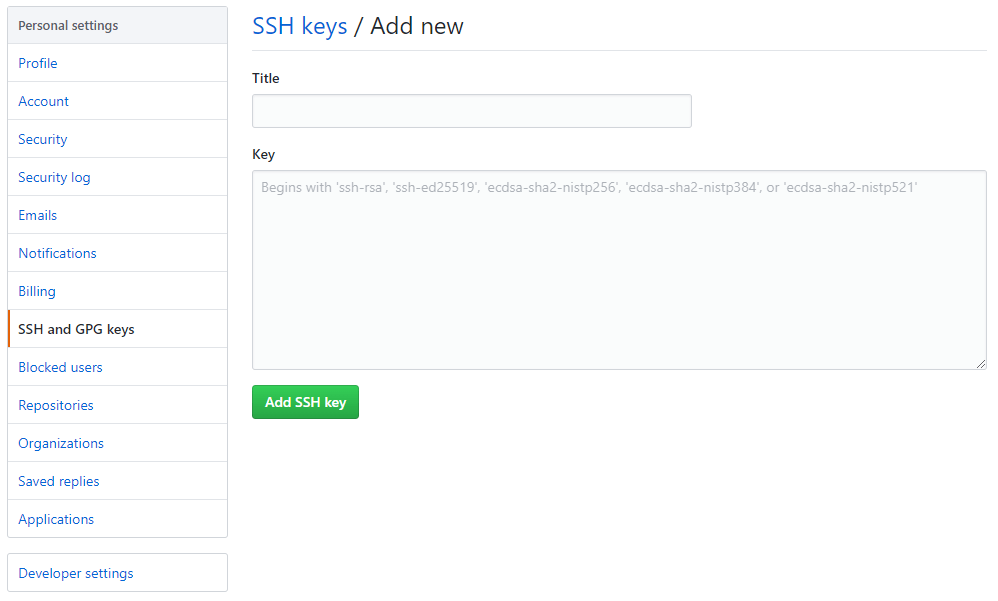

下载Cygwin至如下目录
CYGWIN_HOME:. ├─setup │ setup-x86_64.exe │ └─...
setup-x86_64.exe%CYGWIN_HOME%%CYGWIN_HOME%\setuphttp://mirrors.aliyun.com/cygwin/Category
wget、unzip、bzip2、vim、git、git-svnCYGWIN_HOME%CYGWIN_HOME%\bin到环境变量PATH%CYGWIN_HOME%\usr\local\bin到环境变量PATHSET PATH=%CD%\bin;%PATH% SET PATH=%CD%\WindowsEasyShell\bin;%PATH% REM WindowsEasyShell git clone https://github.com/zhmhbest/WindowsEasyShell.git CALL super .\WindowsEasyShell\install.bat REM CYGWIN_HOME CALL addenv user CYGWIN_HOME "%CD%" CALL addpath %CYGWIN_HOME%\usr\local\bin CALL addpath %CYGWIN_HOME%\bin @FOR /F %i IN ('basename %UserProfile%') DO @addenv user UserName %i
RMDIR /s /q %CYGWIN_HOME%\home\%UserName% MKLINK /J %CYGWIN_HOME%\home\%UserName% %UserProfile%
REM 以管理员身份运行一个“cmd.exe”窗口 SET REG_ROOT=HKLM\SOFTWARE\Classes\Directory\background\shell REG ADD "%REG_ROOT%\bashPrompt" /f /ve /t REG_SZ /d "在此处打开 Bash 窗口(&B)" REG ADD "%REG_ROOT%\bashPrompt" /f /v "Icon" /t REG_SZ /d "%CYGWIN_HOME%\Cygwin-Terminal.ico" REG ADD "%REG_ROOT%\bashPrompt\command" /f /ve /t REG_SZ /d "\"%CYGWIN_HOME%\bin\mintty.exe\" -c \"%CYGWIN_HOME%\%UserName%\.bash_profile\"" REM REG DELETE "%REG_ROOT%\bashPrompt" /f
下载Git for Windows Portable，在当前目录运行命令行并执行以下命令
REM Batch @FOR /F "usebackq" %f in (`DIR /A:-D /B ".\PortableGit-*.7z.exe"`) DO (SET PACKAGE=%CD%\%f) "%ProgramFiles%\7-Zip\7z.exe" x -o"%CYGWIN_HOME%" "%PACKAGE%" cmd mingw64 IF NOT EXIST "%ProgramFiles%\Git" MKDIR "%ProgramFiles%\Git" IF NOT EXIST "%ProgramFiles%\Git\cmd" MKLINK /J "%ProgramFiles%\Git\cmd" "%CYGWIN_HOME%\cmd"
git config --global user.name "YourName" git config --global user.email "YourName@gmail.com"
files.eol设为\n；Editor>Code Style>Line separator设为Unix and macOS (\n)。# core.autocrlf = true(提交LF检出CRLF) | false(不转换) | input(提交LF检出不转换) git config --global core.autocrlf input # core.safecrlf = true(拒绝提交混合换行符文件) | false(允许) | warn(警告) git config --global core.safecrlf true
# 替换文件换行符CRLF为LF sed -i 's/\r//g' README.md
REM Batch type nul>.gitignore git init
# Bash touch .gitignore git init
<filename>指存在于工作区或本地仓库的文件名称，其不一定存在于文件系统中。
git add <filename>
# 方式1 git rm <filename> # 方式2 rm ./<filename> git add <filename> # 移除暂存区删除记录并恢复文件 git restore --staged <filename> git restore <filename>
# 对于首次追踪的文件（其实是取消文件追踪） git rm --cached <filename> # 对于已追踪且修改了的文件 git restore --staged <filename>
git commit -m <message>
# 绿色：暂存区记录 # 红色：未追踪的文件 git status
Changes to be committed:
new file: ?
deleted: ?
modified: ?
Untracked files:
?
# 从最近到最远的显示提交记录（包括作者和日期） git log # 精简显示 git log --pretty=oneline # 指明版本走向（方便查看分支融合情况） git log --graph # 查看版本记录（包括被删除的） git reflog
# 方式1 git restore <filename> # 方式2 git checkout -- <filename> # 方式3 git reset HEAD <filename>
# 回退1个版本 git reset --hard HEAD^ # 回退2个版本 git reset --hard HEAD^^ # 回退10个版本 git reset --hard HEAD~10 # 回退到指定版本，参数由`git reflog`获取 git reset --hard <7位地址>
# 保持文件跟踪，但不监测其修改（`git status`看不到修改） git update-index --assume-unchange <filename> # 恢复文件监测 git update-index --no-assume-unchange <filename> # 查看被忽略修改的文件 git ls-files -v | grep '^h\ ' # 恢复所有文件监测 IFS=`echo -en "\n\b"`; for filename in `git ls-files -v | grep '^h\ ' | awk '{print $2}'`; do echo "stare: $filename" git update-index --no-assume-unchange "$filename" done # 正则匹配忽略 function ignore() { # argv = match IFS=`echo -en "\n\b"`; for filename in `git status | egrep '^\s+(modified|deleted):' | gawk '{print $2}'` do echo $filename | egrep "$1">/dev/nul && { echo "ignore: $filename" git update-index --assume-unchange "$filename" } done } ignore '^classes/' ignore '^build/' ignore '^build.properties' ignore '^.classpath'
# 保存工作现场 git stash # 列出保存的工作现场 git stash list # 恢复工作现场 git stash pop
# 工作区与最近本地仓库对比 # git diff HEAD -- <filename> git diff <filename> # 对比最近两个本地仓库 git diff HEAD HEAD^ -- <filename>
# 查看本地所有分支 git branch # 查看本地所有分支（包括指纹） git branch -v
# 拷贝当前分支，创建新分支 git branch <新分支名称> # 重命名分支 git branch –m <旧分支名称> <新分支名称> # 删除分支 git branch –d <分支名称> # 强制删除分支 git branch –D <分支名称> # 切换分支 git checkout <已存在的分支名称> # 拷贝当前分支，创建新分支，并切换到 git checkout -b <新分支名称>
| 冲突情况 | 解决方案 |
|---|---|
| 两个分支对同一个文件做了修改 | 合并后，需要手动修改该文件再做一次提交 |
| 两个分支分别新增或修改了各自的文件 | 合并后，Git会自动再做一次提交 |
# 快速合并（Fast-forward）指定分支到合并到当前分支 git merge <分支名称> -m <message> # 禁用快速合并（合并后重新做一次新的提交） git merge --no-ff <分支名称> -m <message> # 查看已合并、未合并的分支 git branch --merged git branch --no-merged
将并行开发的分支合并到原分支
# 将当前分支改动合并到指定分支 git rebase <分支名称> # 当发生冲突时，可在修改冲突后继续或放弃 git rebase --continue git rebase --abort
测试demo
# 原始分支 mkdir test pushd test git init echo A>A.txt git add . git commit -m A git branch mywork # 修改master echo B>>A.txt git add . git commit -m B # 修改mywork git checkout mywork echo C>C.txt git add . git commit -m C # 变基合并 git log --all --graph git rebase master git log --all --graph more A.txt more C.txt # 删除测试环境 popd # rmdir /s /q .\test rm -rf ./test
# Bash ssh-keygen -t rsa -C "YourName@gmail.com" ls -al ~/.ssh/ # id_rsa : 私钥（个人持有） # id_rsa.pub : 公钥（公开到云端）

使用https时，无法应用密钥。
# 查看问题是否存在 git remote -v # origin https://github.com/<用户名>/<仓库名> (fetch) # origin https://github.com/<用户名>/<仓库名> (push)
# 修改连接方式 git remote rm origin git remote add origin git@github.com:<用户名>/<仓库名>.git git remote -v git push -u origin master # 第一次使用SSH推送会产生警告 # The authenticity of host 'github.com (13.229.188.59)' can't be established. # RSA key fingerprint is SHA256:nThbg6kXUpJWGl7E1IGOCspRomTxdCARLviKw6E5SY8. # Are you sure you want to continue connecting (yes/no/[fingerprint])? yes
# https git clone https://github.com/<用户名>/<远程仓库名>.git # ssh git clone git@github.com:<用户名>/<远程仓库名>.git
# 本地仓库关联远程仓库 git remote add origin https://github.com/<用户名>/<远程仓库名>.git # 查看远程仓库地址 git remote -v # 解除与远程仓库的关联 git remote rm origin # 本地分支关联云端分支 git branch --set-upstream-to=origin/<远程分支名> <本地分支名>
# 指定分支推送到远程分支（远程分支不存在会自动创建） git push origin <本地分支名>:<远程分支名> # 当前分支推送到远程分支（远程分支不存在会自动创建） git push origin <远程分支名> # 设定默认远程主机，并推送当前分支到master（以后可省略origin） git push -u origin master # 当配置默认主机与远程分支关联后，可直接使用如下命令 git push
git pull = git fetch + git merge
# 拉取云端分支到本地并创建新的本地分支 git fetch origin <远程分支名>:<本地分支名> # 拉取云端分支到当前分支，并自动合并 git pull origin <远程分支名>
# Step1.获取远程master分支到本地创建为tmp git fetch origin master:tmp # Step2.查看当前分支与刚获取的远程分支差异 git diff tmp # Step3.将最新远程分支合并入当前分支 git merge tmp # Step4.删除创建的临时分支 git branch –d tmp
只拉取一个仓库的部分文件夹。
remote_origin="https://github.com/cdarlint/winutils" dir_path="hadoop-3.2.1/bin" mkdir dump/ pushd dump/ git init git remote add -f origin "$remote_origin" #允许使用Sparse Checkout模式 git config core.sparsecheckout true echo "$dir_path">>.git/info/sparse-checkout git pull origin master # popd # rm -f dump/
# 查看云端所有分支 git branch -r # 查看本地和远程所有分支 git branch -a # 删除远程分支（以下均可） git branch –d -r <远程分支名> git push origin :<远程分支名> git push origin --delete <远程分支名>
gh auth login # GitHub.com # SSH # %UserProfile%\.ssh\id_rsa.pub # Paste an authentication token # https://github.com/settings/tokens
# 列出所有仓库 gh repo list # 查看仓库README gh repo view <用户名>/<仓库名> gh repo view <仓库名> # 创建新仓库 gh repo create <新仓库名>
仓库地址
├─branches 项目分支
│ ├─A
│ └─B
├─tags 发布的版本
│ ├─1.0
│ └─1.1
└─trunk 主版本
└─project
# 克隆到本地 git svn clone [-r <开始提交记录>:<结束提交记录>] [--prefix=svn/] <仓库地址|分支地址> # 克隆最新到本地 git svn clone -r HEAD --prefix=svn/ <仓库地址|分支地址>
git svn rebase
git svn rebase git svn dcommit